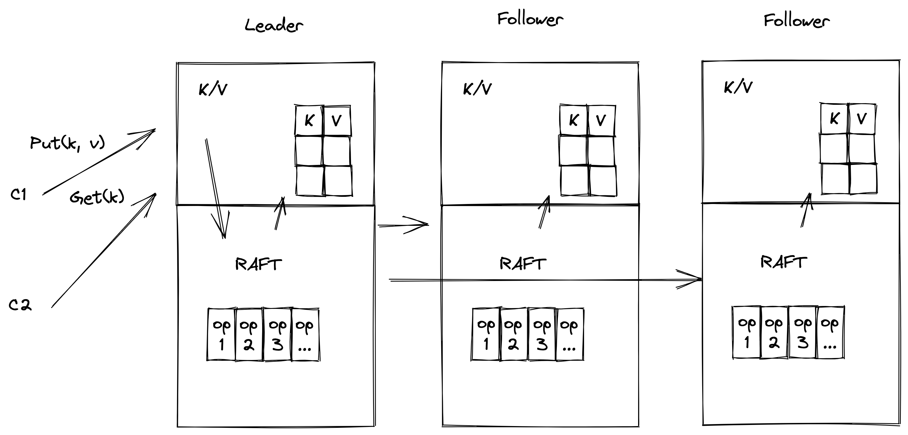

基于 Raft 库，实现简单的分布式 KV 系统
系统架构概览
上一章中，我们已经介绍了我们构建好的 Raft 库，它在 eraft/raftcore 目录下。现在我们要使用这个库来构建一个高可用的分布式 KV 存储系统。

让我们回到上图，这个图在我们一开始介绍 Raft 的时候讲到过，我们这一章就要实现这样一个系统。
对外接口定义
第一步我们来定义系统与客户端的交互接口，客户端可以发送 Put 和 Get 操作将 KV 数据写到系统中。我们需要定义这两个操作的 RPC。我们将它们合并到一个 RPC 请求里面，定义如下：
//
// client op type
//
enum OpType {
OpPut = 0;
OpAppend = 1;
OpGet = 2;
}
//
// client command request
//
message CommandRequest {
string key = 1;
string value = 2;
OpType op_type = 3;
int64 client_id = 4;
int64 command_id = 5;
bytes context = 6;
}
//
// client command response
//
message CommandResponse {
string value = 1;
int64 leader_id = 2;
int64 err_code = 3;
}
rpc DoCommand (CommandRequest) returns (CommandResponse) {}
其中 OpType 定义了我们支持的操作类型：put,Append,get。 客户端请求的内容定义在了 CommandRequest 中。CommandRequest 中有我们的 key, value 以及操作类型，还有客户端 id 以及命令 id, 还有一个字节类型的 context （context 可以存放一些我们需要附加的不确定的内容）。
响应 CommandResponse 包括了返回值 value ，leader_id 字段（告诉我们当前 Leader 是哪个节点的。因为最开始客户端发送请求时，不知道那个节点被选成 Leader 。我们通过一次试探请求拿到 Leader 节点的 id, 然后再次发送请求给 Leader 节点。），以及错误码 err_code（记录可能出现的错误）。
客户端通过 DoCommand RPC 请求到我们的分布式 KV 系统。那我们的系统是怎么处理请求的呢？首先，我们来看看服务端的结构的定义。 mu 是一把读写锁，用来对可能出现并发冲突的操作加锁。dead 表示当前服务节点的状态，是不是存活。Rf 比较重要，这个是只想我们之前构建的 Raft 结构的指针。applyCh 是一个通道，用来从我们的算法库中返回已经 apply 的日志。我们的 server 拿到这个日之后需要 apply 到实际的状态机中。stm 就是我们的状态机了，我们一会儿介绍。notifyChans 是一个存储客户端响应的 map，其中值是一个通道。KvServer 在应用日志到状态机操作完之后，会给客户端发送响应到这个通道中。stopApplyCh 用来停止我们的 Apply 操作。
服务端核心实现分析}
type KvServer struct {
mu sync.RWMutex
dead int32
Rf *raftcore.Raft
applyCh chan *pb.ApplyMsg
lastApplied int
stm StateMachine
notifyChans map[int]chan *pb.CommandResponse
stopApplyCh chan interface{}
pb.UnimplementedRaftServiceServer
}
有了这个结构之后，我们要如何应用 Raft 算法库实现图中高可用的 kv 分布式系统呢？
首先我们要构造到每个 server 的 rpc 客户端；
然后，构造 applyCh 通道，以及构造日志存储结构；
之后，调用 MakeRaft 构造我们的 Raft 算法库核心结构；
最后，启动 Apply Goruntine，从通道中监听在经过 Raft 算法库之后返回的消息。
func MakeKvServer(nodeId int) *KvServer {
clientEnds := []*raftcore.RaftClientEnd{}
for id, addr := range PeersMap {
newEnd := raftcore.MakeRaftClientEnd(addr, uint64(id))
clientEnds = append(clientEnds, newEnd)
}
newApplyCh := make(chan *pb.ApplyMsg)
logDbEng, err := storage_eng.MakeLevelDBKvStore("./data/kv_server" + "/node_" + strconv.Itoa(nodeId))
if err != nil {
raftcore.PrintDebugLog("boot storage engine err!")
panic(err)
}
// 构造 Raft 结构，传入 clientEnds，当前节点 id, 日志存储的 db, apply 通道，心跳超时时间，和选举超时时间
// 由于是测试，为了方便观察选举的日志，我们设置的时间是 1s 和 3s, 你可以设置的更短
newRf := raftcore.MakeRaft(clientEnds, nodeId, logDbEng, newApplyCh, 1000, 3000)
kvSvr := &KvServer{Rf: newRf, applyCh: newApplyCh, dead: 0, lastApplied: 0, stm: NewMemKV(), notifyChans: make(map[int]chan *pb.CommandResponse)}
kvSvr.stopApplyCh = make(chan interface{})
// 启动 apply Goruntine
go kvSvr.ApplingToStm(kvSvr.stopApplyCh)
return kvSvr
}
客户端命令到来之后，最开始调用的是 DoCommand 函数，我们来看看这个函数做了哪些工作：
首先，Docommand 函数调用 Marshal 序列化了我们的 CommandResponse 到 reqBytes 的字节数组中，然后调用 Raft 库的 Propose 接口，把提案提交到我们的算法库中。Raft 算法中只有 Leader 可以处理提案。如果节点不是 Leader 我们会直接返回给客户端 ErrCodeWrongLeader 的错误码。之后就是从 getNotifyChan 拿到当前日志 id 对应的 apply 通知通道。只有这条日志通知到了，下面 select 才会继续往下走，拿到值放到 cmdResp.Value 中，当然如果操作超过了 ErrCodeExecTimeout 时间也会生成错误码，响应客户端执行超超时。
func (s *KvServer) DoCommand(ctx context.Context, req *pb.CommandRequest) (*pb.CommandResponse, error) {
raftcore.PrintDebugLog(fmt.Sprintf("do cmd %s", req.String()))
cmdResp := &pb.CommandResponse{}
if req != nil {
reqBytes, err := json.Marshal(req)
if err != nil {
return nil, err
}
idx, _, isLeader := s.Rf.Propose(reqBytes)
if !isLeader {
cmdResp.ErrCode = common.ErrCodeWrongLeader
return cmdResp, nil
}
s.mu.Lock()
ch := s.getNotifyChan(idx)
s.mu.Unlock()
select {
case res := <-ch:
cmdResp.Value = res.Value
case <-time.After(ExecCmdTimeout):
cmdResp.ErrCode = common.ErrCodeExecTimeout
cmdResp.Value = "exec cmd timeout"
}
go func() {
s.mu.Lock()
delete(s.notifyChans, idx)
s.mu.Unlock()
}()
}
return cmdResp, nil
}
最后我们来看看 Apply Goruntine 干的事情：
它等待 s.applyCh 通道中 apply 消息的到来。这个 applyCh 我们在 Raft 库中提到过，它用来通知应用层日志已经提交，应用层可以把日志应用到状态机了。当 applyCh 中 appliedMsg 到来之后，我们更新了 KvServer 的 lastApplied 号，然后根据客户端的操作类型对我们的状态机做不同的操作，做完之后把响应放到 notifyChan 中，也就是 DoCommand 等待的那个通道，至此整个请求处理的流程已经结束。
func (s *KvServer) ApplingToStm(done <-chan interface{}) {
for !s.IsKilled() {
select {
case <-done:
return
case appliedMsg := <-s.applyCh:
req := &pb.CommandRequest{}
if err := json.Unmarshal(appliedMsg.Command, req); err != nil {
raftcore.PrintDebugLog("Unmarshal CommandRequest err")
continue
}
s.lastApplied = int(appliedMsg.CommandIndex)
var value string
switch req.OpType {
case pb.OpType_OpPut:
s.stm.Put(req.Key, req.Value)
case pb.OpType_OpAppend:
s.stm.Append(req.Key, req.Value)
case pb.OpType_OpGet:
value, _ = s.stm.Get(req.Key)
}
cmdResp := &pb.CommandResponse{}
cmdResp.Value = value
ch := s.getNotifyChan(int(appliedMsg.CommandIndex))
ch <- cmdResp
}
}
}
客户端实现介绍}
客户端实现就比较简单了，主要是构造 Get 和 Put 的 CommandRequest 调用 DoCommand 发送到服务端，逻辑实现在 cmd/kvcli/kvcli.go 里面。
我们总结一下：
客户端请求到来之后， KvServer 首先会调用 Propose 提交日志到 Raft 中算法库。Raft 算法库经过共识之后提交这条日志，并通知 applyCh，KvServer 会在 Apply Goruntine 中将 applyCh 的消息解码，然后将操作应用到自己的状态机中，最后把结果写到通知客户端的 notifyChan 中，在 DoCommand 中响应结果给客户端。
捐赠
整理这本书耗费了我们大量的时间和精力。如果你觉得有帮助，一瓶矿泉水的价格支持我们继续输出优质的分布式存储知识体系，2.99¥，感谢大家的支持。